The news-sentiment-ai-trader is an automated trading system that leverages Large Language Models (LLMs) to perform sentiment analysis on real-time news data and execute trades based on qualitative market drivers. By integrating news retrieval, AI-driven forecasting, and a robust backtesting framework, the system attempts to capture market movements driven by macroeconomic events, geopolitical shifts, and sector-specific news.
The system is designed to bridge the gap between "Natural Language Space" (news articles, Fed announcements, social sentiment) and "Code Entity Space" (trade signals, price candles, order execution). It uses a "swarm" of AI agents to digest complex information into a structured ForecastResponseContract, which is then mapped to trading actions within the backtest-kit framework.
feb_2026_strategy for performance benchmarking.The following diagram illustrates how news data is transformed into a financial position.
Data Flow: News to Trade

The system is organized into three primary layers:
logic/)This module handles the intelligence of the system. It uses agent-swarm-kit to manage specialized advisors that provide the LLM with context. The engine produces a forecast containing a sentiment (bullish, bearish, or neutral), a confidence score, and a detailed reasoning string.
TavilyNewsAdvisor, OllamaOutlineToolCompletion, ForecastResponseContract.content/)Strategies define how forecast data is translated into market positions. For example, the feb_2026_strategy maps LLM sentiment labels to LONG/SHORT signals and manages the position lifecycle using trailing take-profits and hard stop-losses.
POSITION_LABEL_MAP, TRAILING_TAKE, HARD_STOP.backtest-kit)The underlying engine that manages the signal state machine, backtesting logic, and exchange connectivity. It ensures that trades are executed according to the strategy's rules while preventing look-ahead bias during simulations.
Backtest.run(), Live.background(), ccxt-exchange.This diagram maps the conceptual components to the specific code implementations and files.
System Entity Map

To get the system running, you must configure environment variables for the AI services and use the @backtest-kit/cli.
npm install..env.example to .env and provide your OLLAMA_TOKEN and TAVILY_TOKEN.npm start -- --backtest --symbol BTCUSDT \
--strategy feb_2026_strategy \
--exchange ccxt-exchange \
--frame feb_2026_frame \
./content/feb_2026.strategy/feb_2026.strategy.ts
For a detailed step-by-step guide, see Getting Started & Configuration.
The system follows a modular architecture where the forecasting logic is decoupled from the trading execution. This allows for swapping LLM models or news providers without modifying the core trading strategy.
fetchNews with a 24-hour window to ensure only relevant information is processed.backtest-kit core.data/signals/ to allow for crash recovery.For a deep dive into the internal mechanics, see System Architecture Overview.